点（てん）– Point, Dot, Mark
- 点数【てんすう】
– Score, marks - 終点【しゅうてん】
– Last stop, terminus - 点火【てんか】
– Ignition - 点検【てんけん】
– Inspection, check - 点を取る【てんをとる】
– To score a point
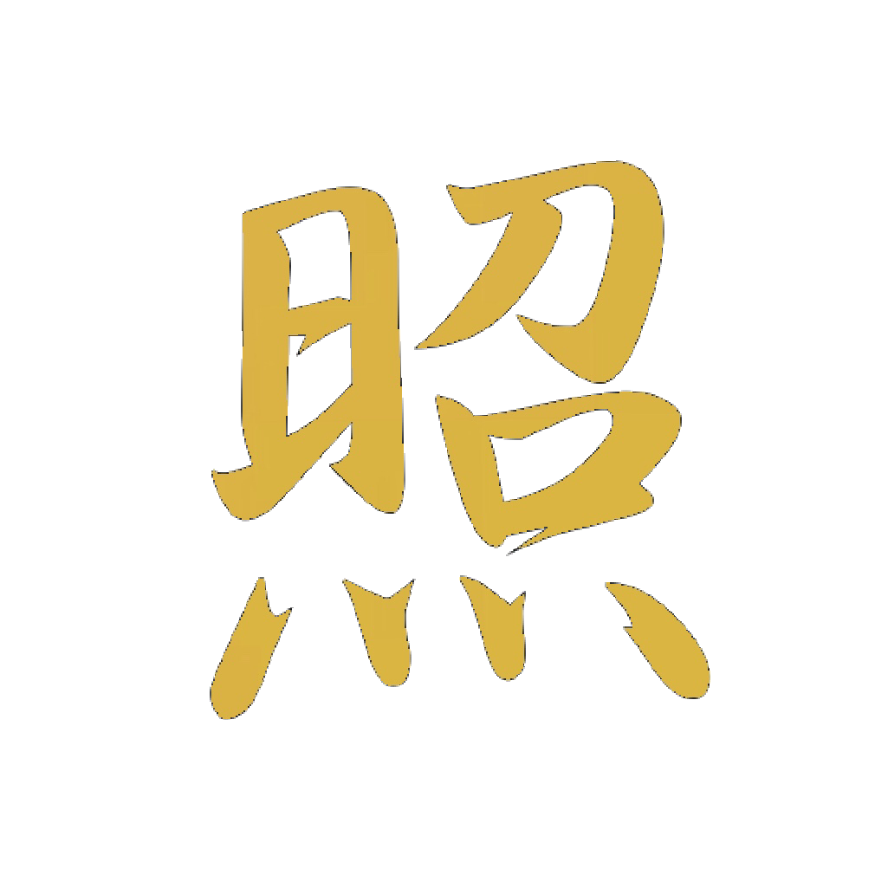
照（しょう／て・てる）– Illuminate, Shine
- 照明【しょうめい】
– Illumination, lighting - 対照【たいしょう】
– Contrast, comparison - 日照【にっしょう】
– Sunshine - 照れくさい【てれくさい】
– Embarrassing, shy - 照らす【てらす】
– To shine on, illuminate
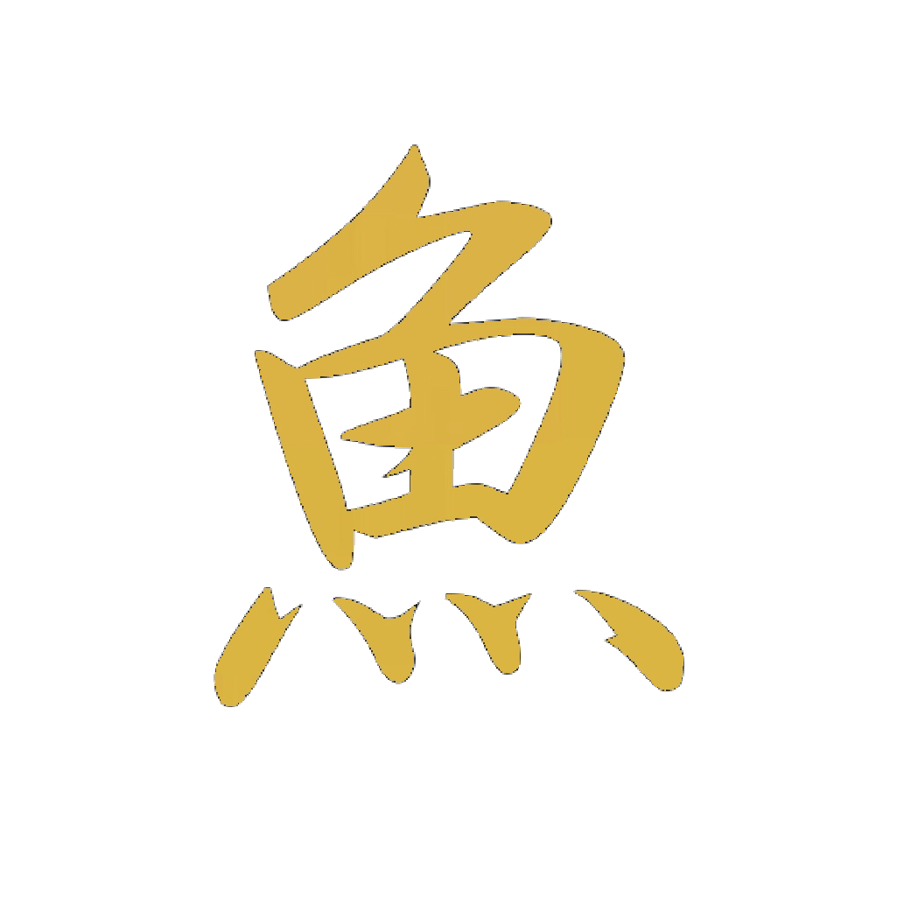
魚（ぎょ／さかな・うお）– Fish
- 魚類【ぎょるい】
– Fish species - 熱帯魚【ねったいぎょ】
– Tropical fish - 魚屋【さかなや】
– Fish store - 白身魚【しろみざかな】
– White-fleshed fish - 魚を焼く【さかなをやく】
– To grill fish
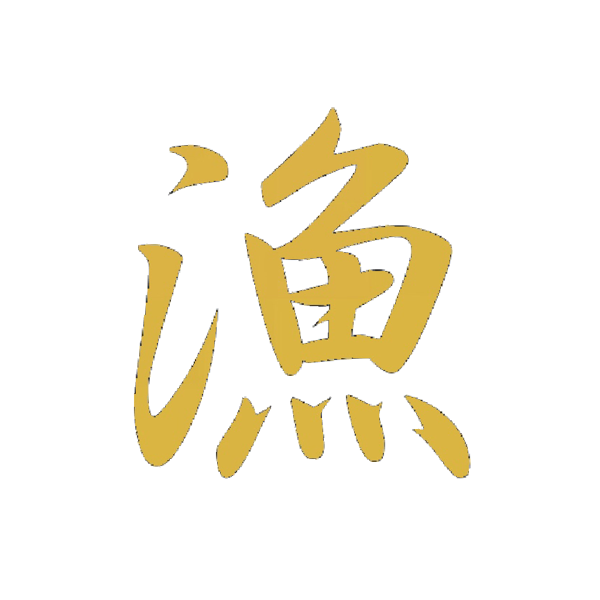
漁（ぎょ／りょう・あさ）– Fishing
- 漁業【ぎょぎょう】
– Fishing industry - 漁師【りょうし】
– Fisherman - 漁船【ぎょせん】
– Fishing boat - 沿岸漁業【えんがんぎょぎょう】
– Coastal fishing - 漁る【あさる】
– To scavenge, fish for

里（り／さと）– village, hometown
- 里帰り【さとがえり】
– Returning to one's hometown (often for childbirth or holidays) - 千里【せんり】
– A thousand ri (long distance; metaphor for great length) - 里山【さとやま】
– Satoyama (border area between mountain and village, often used in environmental talk) - 郷里【きょうり】
– Birthplace, native village - 他里【たり】
– Another village (archaic or poetic usage)
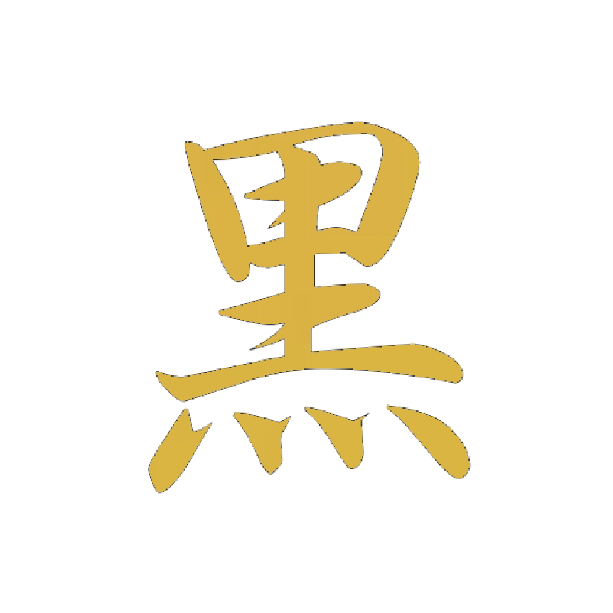
黒（こく／くろ）– black
- 黒板【こくばん】
– Blackboard - 黒字【くろじ】
– Surplus, in the black (profit) - 黒人【こくじん】
– Black person (formal) - 真っ黒【まっくろ】
– Pitch black - 黒幕【くろまく】
– Mastermind (behind the scenes)

墨（ぼく／すみ）– black ink
- 墨汁【ぼくじゅう】
– India ink (liquid ink for calligraphy) - 墨絵【すみえ】
– Ink painting - 墨色【すみいろ】
– Ink color, jet black - 墨守【ぼくしゅ】
– Sticking to old ways (stubborn adherence) - 筆墨【ひつぼく】
– Writing brush and ink
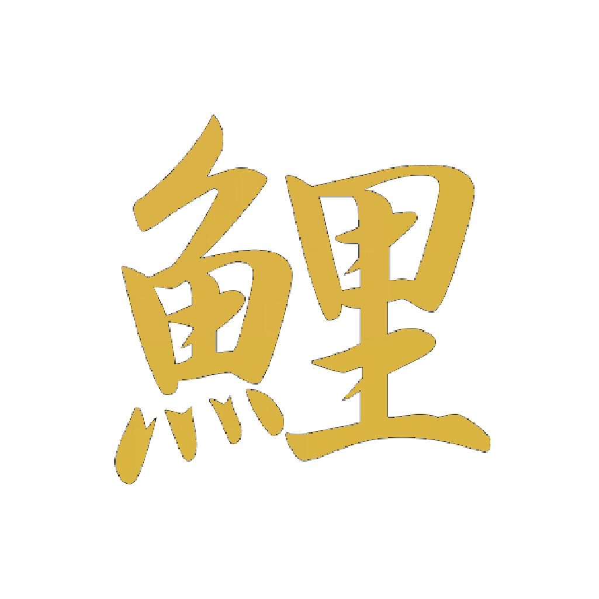
鯉（り／こい）– carp
- 鯉のぼり【こいのぼり】
– Koinobori, carp streamers (flown on Children's Day) - 錦鯉【にしきごい】
– Nishikigoi, ornamental koi carp - 鯉料理【こいりょうり】
– Carp cuisine/dishes using carp - 鯉池【こいいけ】
– Carp pond - 鯉城【りじょう】
– Carp Castle (nickname for Hiroshima Castle)
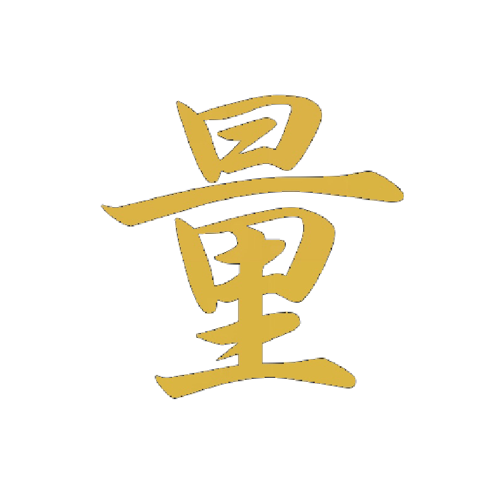
量（りょう）– quantity, amount
- 数量【すうりょう】
– Numerical quantity, amount - 分量【ぶんりょう】
– Portion, dosage - 容量【ようりょう】
– Capacity (volume or data) - 重量【じゅうりょう】
– Weight (as in mass) - 少量【しょうりょう】
– Small quantity

厘（りん）– rin (a tiny unit, 1/1000th)
- 一厘【いちりん】
– One rin (0.1%, used in precise financial/weight contexts) - 分厘【ぶんりん】
– Fractions of a unit (used for fine measurements) - 毫厘【ごうりん】
– A hair’s breadth, a minute amount (classical or poetic usage) - 厘毛【りんもう】
– Extremely fine hair (rare/archaic) - 十厘【じゅうりん】
– Ten rin (1%, sometimes used in interest rates historically)
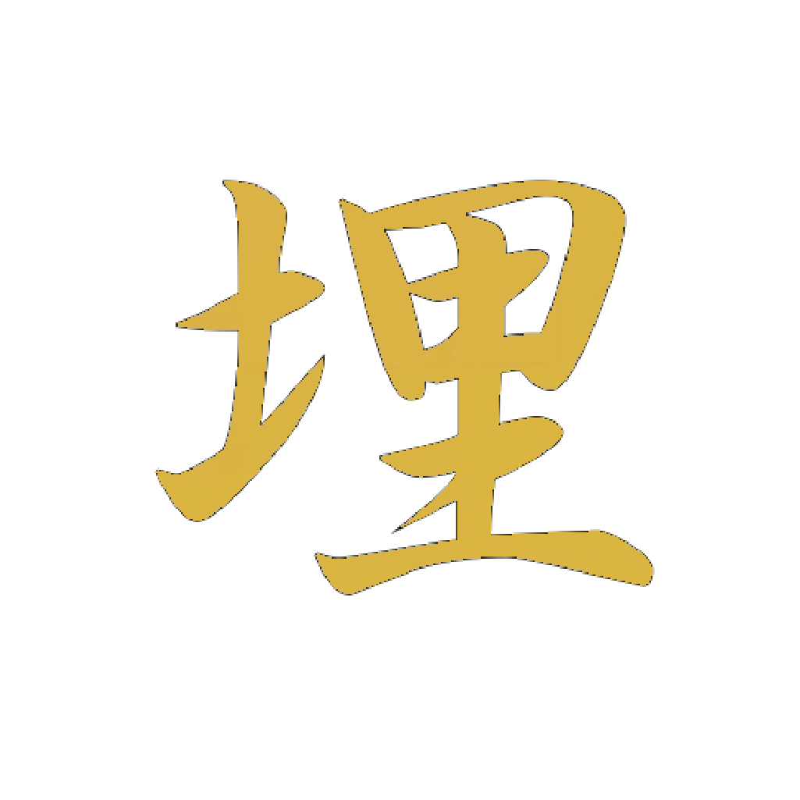
埋（まい／うめ・うま）– bury, fill in
- 埋める【うめる】
– To bury, to fill in - 埋まる【うまる】
– To be buried, to be filled - 埋没【まいぼつ】
– Being buried (figuratively or literally), obscured - 埋蔵【まいぞう】
– Buried (usually treasure, resources, etc.) - 埋立地【うめたてち】
– Reclaimed land (from the sea, rivers, etc.)
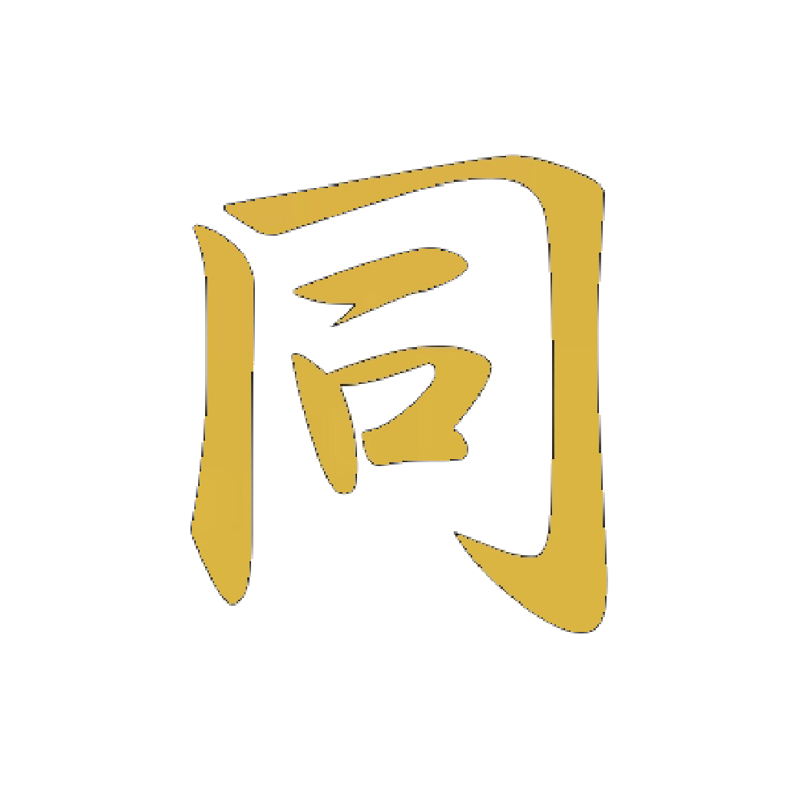
同（どう／おな）– same, together
- 同じ【おなじ】
– Same, identical - 同意【どうい】
– Agreement, consent - 同時【どうじ】
– At the same time - 同級生【どうきゅうせい】
– Classmate (same year) - 共同【きょうどう】
– Cooperation, joint (effort/property)

洞（どう／ほら）– cave, hollow
- 洞窟【どうくつ】
– Cave, cavern - 空洞【くうどう】
– Hollow, cavity (literal or metaphorical) - 洞察【どうさつ】
– Insight, deep perception - 洞穴【ほらあな】
– Cave, grotto - 洞門【どうもん】
– Tunnel gate (natural or carved stone gate)
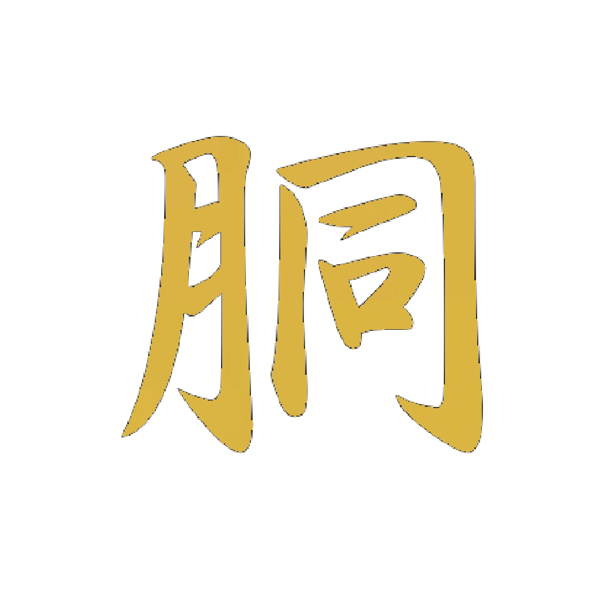
胴（どう）– trunk, torso
- 胴体【どうたい】
– Torso, trunk of the body or an aircraft - 胴上げ【どうあげ】
– Tossing someone in the air (e.g., to celebrate a victory) - 胴着【どうぎ】
– Martial arts uniform (judo, karate, etc.) - 木胴【きどう】
– Wooden torso (e.g., for dummies, armor, etc.) - 胴元【どうもと】
– House (the banker/organizer in gambling)

向（こう／む・むか）– direction, facing
- 向く【むく】
– To face, to turn toward - 向かう【むかう】
– To head toward, to go in the direction of - 方向【ほうこう】
– Direction, orientation - 向上【こうじょう】
– Improvement, progress - 南向き【みなみむき】
– Facing south
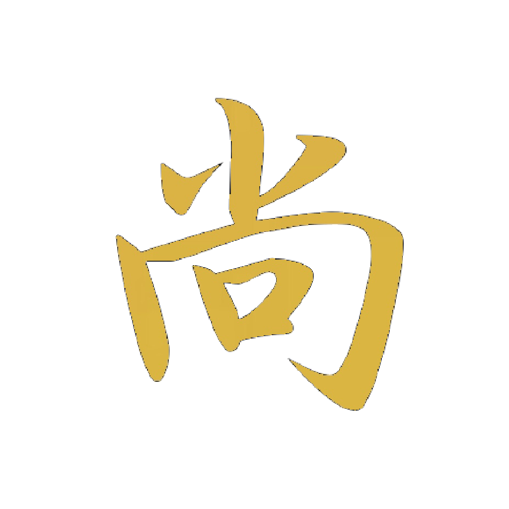
尚（しょう／なお）– esteem, furthermore
- 尚早【しょうそう】
– Premature, too early - 高尚【こうしょう】
– Noble, refined, high-class (often of culture or art) - 尚武【しょうぶ】
– Respect for martial virtues - 尚書【しょうしょ】
– Minister of State (ancient Chinese office) - 尚可【しょうか】
– Acceptable, permissible (somewhat archaic)

字（じ／あざ）– character, letter
- 文字【もじ】
– Character, letter (of the alphabet or kanji) - 漢字【かんじ】
– Chinese character (kanji) - 名字【みょうじ】
– Surname, family name - ローマ字【ローマじ】
– Roman letters, Romanization - 習字【しゅうじ】
– Penmanship, calligraphy practice
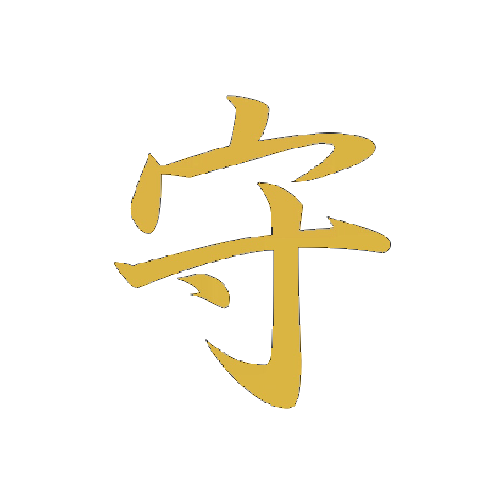
守（しゅ／まも・もり）– guard, protect
- 守る【まもる】
– To protect, to守 keep (a promise, law, etc.) - 保守【ほしゅ】
– Conservatism, maintenance, preservation - 留守【るす】
– Absence from home - 守備【しゅび】
– Defense (sports or military) - 守り神【まもりがみ】
– Guardian deity

完（かん）– perfect, complete
- 完成【かんせい】
– Completion, perfection (of something) - 完了【かんりょう】
– Completion, conclusion (of a process) - 完全【かんぜん】
– Perfect, complete, flawless - 未完【みかん】
– Incomplete, unfinished - 完璧【かんぺき】
– Perfection, impeccable
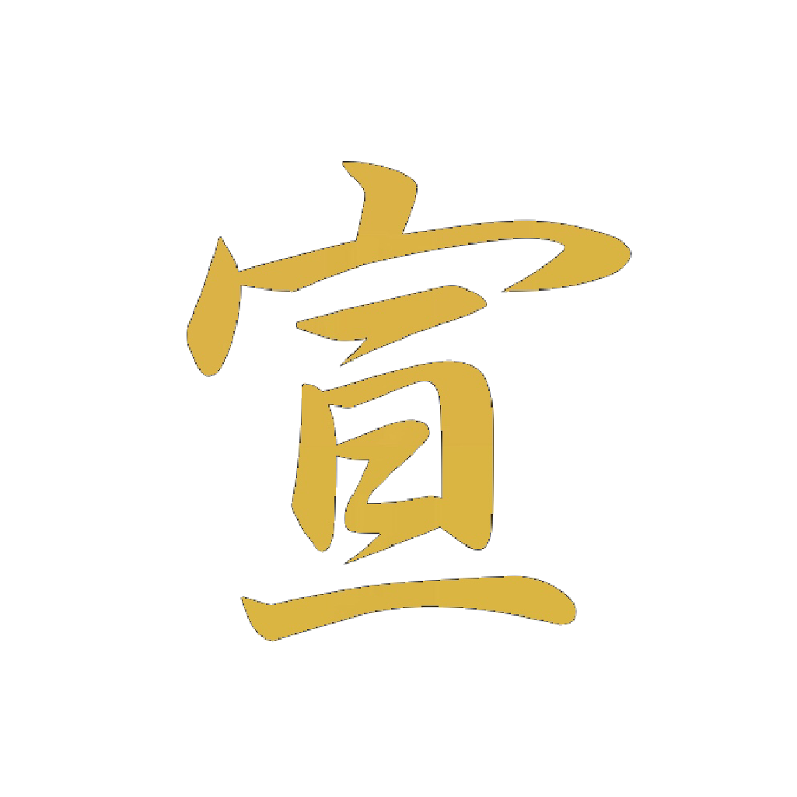
宣（せん）– proclaim, declare
- 宣言【せんげん】
– Declaration, proclamation - 宣伝【せんでん】
– Advertisement, publicity - 宣教師【せんきょうし】
– Missionary - 宣告【せんこく】
– Pronouncement, sentence (legal or medical) - 宣誓【せんせい】
– Oath, vow (often official)